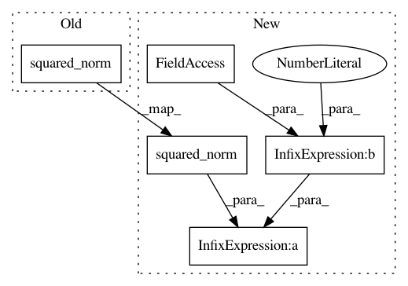

cada59ce5e633487120c0d2fc543202d64f555a4,geomstats/geometry/hyperbolic_space.py,HyperbolicMetric,squared_norm,#HyperbolicMetric#Any#Any#,242
Before Change
sq_norm : array-like, shape=[n_samples, 1]
or shape=[1, 1]
sq_norm = self.embedding_metric.squared_norm(vector)
return sq_norm
def exp(self, tangent_vec, base_point):
After Change
sq_norm : array-like, shape=[n_samples, 1]
or shape=[1, 1]
sq_norm = self.scale ** 2 * self.embedding_metric.squared_norm(vector)
return sq_norm
def exp(self, tangent_vec, base_point):
In pattern: SUPERPATTERN
Frequency: 3
Non-data size: 5
Instances
Project Name: geomstats/geomstats
Commit Name: cada59ce5e633487120c0d2fc543202d64f555a4
Time: 2020-01-16
Author: yann.cabanes@u-bordeaux.fr
File Name: geomstats/geometry/hyperbolic_space.py
Class Name: HyperbolicMetric
Method Name: squared_norm
Project Name: geomstats/geomstats
Commit Name: abec08f790f64e06697b89884ac7cb9f5d6439ae
Time: 2020-01-17
Author: thomas.l.p.gerald@gmail.com
File Name: geomstats/geometry/hyperbolic_space.py
Class Name: HyperbolicMetric
Method Name: squared_norm
Project Name: geomstats/geomstats
Commit Name: b6b5cb2fe4dabac0b338ce21172f43f10ec0b3da
Time: 2020-01-16
Author: yann.cabanes@u-bordeaux.fr
File Name: geomstats/geometry/hyperbolic_space.py
Class Name: HyperbolicMetric
Method Name: squared_norm